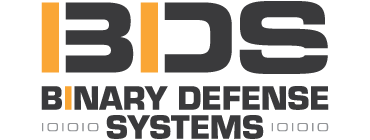
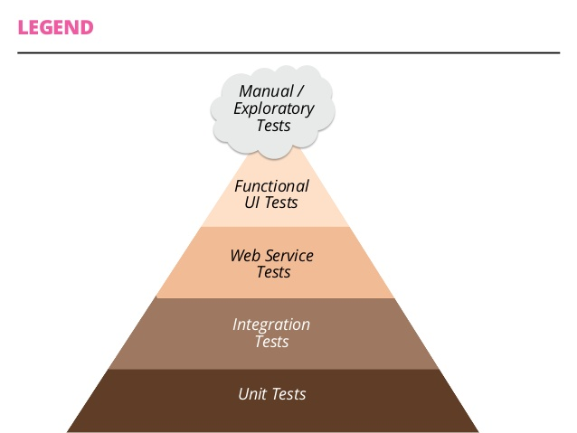

Security Automation in your Continuous Integration Pipeline

Jimmy Byrd
Jimmy Byrd?
- @jimmy_byrd
- Github
- Lead Developer at Binary Defense Systems

Continuous what now?
Continuous Integration
Continuous Integration is a software development practice where members of a team integrate their work frequently . . . Each integration is verified by an automated build (including test) to detect integration errors as quickly as possible.
Martin Fowler
Why?
To prevent:

Continuous Integration
- Push
- Build*
- Test
- Report
Merging code
1: 2: 3: 4: 5: 6: 7: 8: 9: 10: 11: 12: 13: 14: 15: |
|
CI Tools
Testing

Security Testing
Automated testing hierarchy

The Rugged Manifesto
I am rugged and, more importantly, my code is rugged.
I recognize that software has become a foundation of our modern world.
I recognize the awesome responsibility that comes with this foundational role.
I recognize that my code will be used in ways I cannot anticipate, in ways it was not designed, and for longer than it was ever intended.
I recognize that my code will be attacked by talented and persistent adversaries who threaten our physical, economic and national security.
I recognize these things – and I choose to be rugged.
I am rugged because I refuse to be a source of vulnerability or weakness.
I am rugged because I assure my code will support its mission.
I am rugged because my code can face these challenges and persist in spite of them.
I am rugged, not because it is easy, but because it is necessary and I am up for the challenge.
OWASP/Pipeline
Pipeline is a framework for running a series of tools. Generally, it is intended as a backbone for automating a security analysis pipeline of tools.
Github README
Maintainers
Four simple concepts
- Mounters
- Tasks
- Filters
- Reporters
What's in the box? (MOUNTERS)
- Docker
- File System
- Git
- ISO
- URL
What's in the box? (TASKS)
- ClamAV
- Breakman (Ruby)
- Bundle-Audit (Ruby)
- Checkmarx (Code)
- DawnScanner (Ruby)
- File Integrity Monitoring
- FindSecurityBugs (Java)
- NodeSecurityProject (Javascript)
- OWASPDependencyCheck (Java and .NET)
- PMD Source Code Analyzer (Code)
- RetireJS (Javascript)
- Snyk (Javascript)
- Zap
What's in the box? (FILTERS)
- Jira
- Zap
What's in the box? (REPORTERS)
- CSV
- Jira
- Json
- Text
Getting started
Native
1:
|
|
Docker
1: 2: |
|
Help
1:
|
|
Hello World!
1:
|
|
Hello World output
1: 2: 3: 4: 5: 6: 7: 8: 9: 10: |
|
Tools vs Labels
Have to go code spelunking
1:
|
|
Example from Brakeman.rb
1: 2: 3: 4: 5: 6: 7: |
|
Important pieces
- Name (without spaces) = Tool
- Labels = Labels
All tools
1: 2: 3: 4: 5: 6: 7: 8: 9: 10: 11: 12: 13: 14: 15: |
|
Tools example
1:
|
|
This will run brakeman and eslint
All Labels
1: 2: 3: 4: 5: 6: 7: 8: 9: 10: 11: 12: 13: 14: 15: |
|
Labels example
1:
|
|
This will run brakeman and bundle-audit